“I think we’re in a time where a lot of young adults are on fire for their faith, but there’s a disconnect because many don’t know how to unite or move something forward.”
Catherine Dombrowski · July 7
The action
Roberto Lacayo
Serving with the Missionaries of Charity
Attendee
“All of them had drastically different experience, but they all were incredible young adult leaders… they are just humans who are deciding to say yes despite their fear.”
Megan Sauter · July 7
From one evening to a community.
Formed in June 2026 in partnership with the Archdiocese of San Francisco. Every lecture night since has sold out.
Since June
0
Gatherings held
Registrations
0
Across three lecture nights
Capacity
0
Consecutive sold-out nights
The room
0
Speakers and panelists
Archdiocese of San FranciscoOffice of Human Life & DignityCalifornia Catholic ConferenceCatholic Charities San FranciscoOrder of Malta, Western AssociationLay Mission InstitutePro-Life San FranciscoSt. Anthony FoundationMissionaries of CharityStar of the Sea Young AdultsBay Wide Young AdultsMarin Young Adult GroupArchdiocese of San FranciscoOffice of Human Life & DignityCalifornia Catholic ConferenceCatholic Charities San FranciscoOrder of Malta, Western AssociationLay Mission InstitutePro-Life San FranciscoSt. Anthony FoundationMissionaries of CharityStar of the Sea Young AdultsBay Wide Young AdultsMarin Young Adult Group
Marin Young Adult GroupBay Wide Young AdultsStar of the Sea Young AdultsMissionaries of CharitySt. Anthony FoundationPro-Life San FranciscoLay Mission InstituteOrder of Malta, Western AssociationCatholic Charities San FranciscoCalifornia Catholic ConferenceOffice of Human Life & DignityArchdiocese of San FranciscoMarin Young Adult GroupBay Wide Young AdultsStar of the Sea Young AdultsMissionaries of CharitySt. Anthony FoundationPro-Life San FranciscoLay Mission InstituteOrder of Malta, Western AssociationCatholic Charities San FranciscoCalifornia Catholic ConferenceOffice of Human Life & DignityArchdiocese of San Francisco
In partnership with the Archdiocese of San Francisco, the Office of Human Life and Dignity, the California Catholic Conference, Catholic Charities San Francisco, the Order of Malta Western Association, the Lay Mission Institute, Pro-Life San Francisco, the St. Anthony Foundation, the Missionaries of Charity, Star of the Sea Young Adults, Bay Wide Young Adults and the Marin Young Adult Group.
The evening
What a night actually looks like — 6:30 to 9:30, one Tuesday a month, in a parish hall in San Francisco.
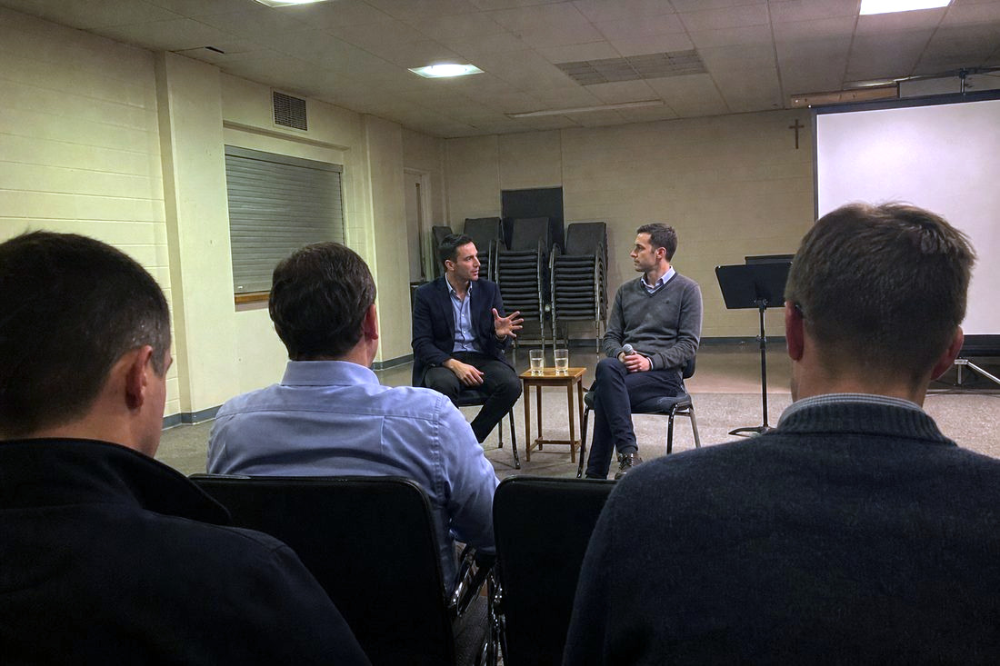
Illustration
—until the next evening
Next · Called to Relationship
Tuesday October 6 · Dating, love, and the spiritual battle for our relationships.
Speaker — Ed Hopfner, Director of Marriage and Family Life, Archdiocese of San Francisco
Check-in, a drink, and the half hour where most of the introductions actually happen.
Then the keynote
One theme of Catholic Social Teaching a month, from someone who works in it daily.
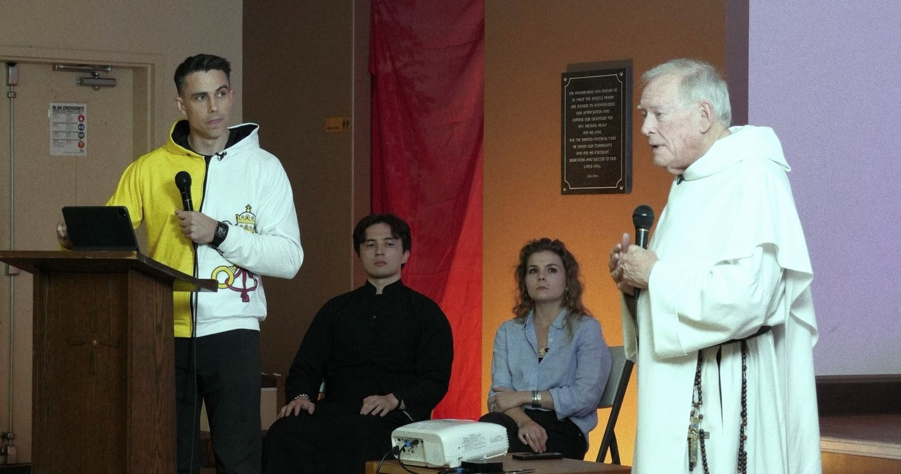
And the panel
Seventeen speakers so far — from the California Catholic Conference, Catholic Charities San Francisco, the St. Anthony Foundation, the Order of Malta Clinic of Northern California, Pro-Life San Francisco and the Lay Mission Institute.
Then the action
October 10 · St. Vincent de Paul, Division Circle Navigation Center, 10 AM to 2 PM.
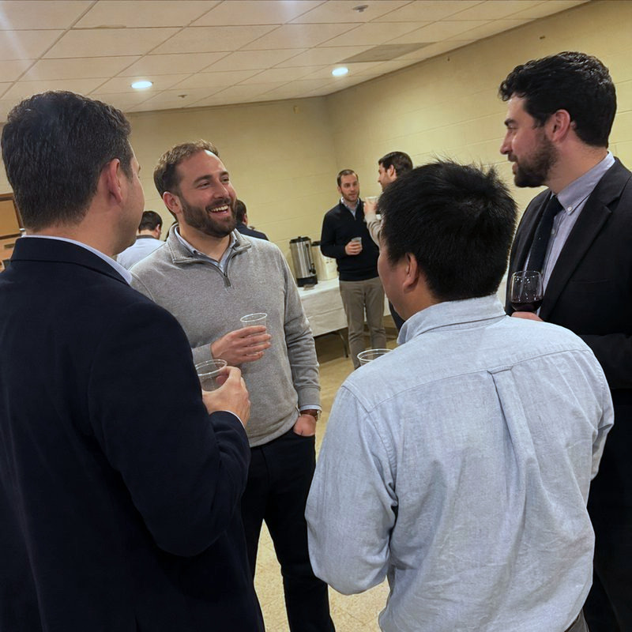
Illustration
Free · 21 to 40
Registration required. Business casual encouraged. The address is shared with you when you register.
Take a seat.
Every monthly evening so far has sold out. There is no membership fee and no application — only a registration.
Every evening includes a keynote on one theme of Catholic Social Teaching, a panel, a reception at 6:30 and another afterwards, and a direct ministry action. Free, for ages 21 to 40, business casual, no application — only a registration.
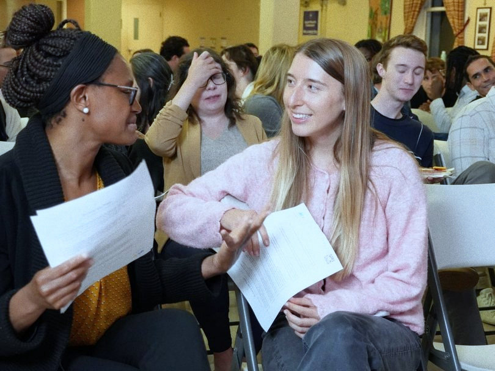
A keynote on one theme of Catholic Social Teaching
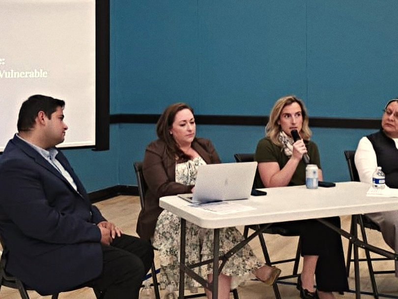
A panel of people who actually do the work
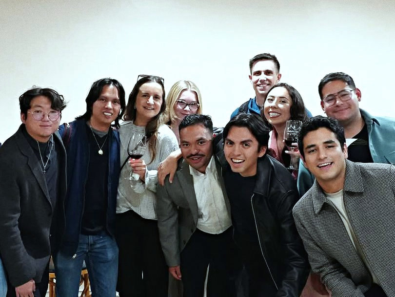
A reception at 6:30, and another one after
Free, for ages 21 to 40
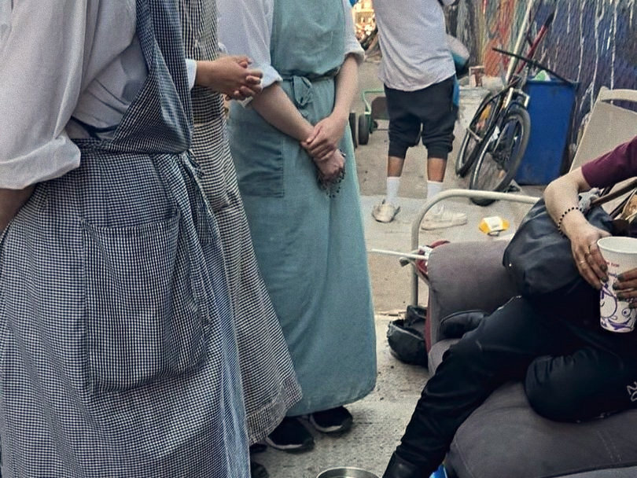
A direct ministry action every month
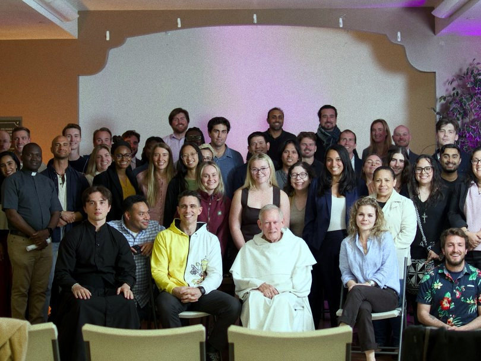
Formed with the Archdiocese of San Francisco
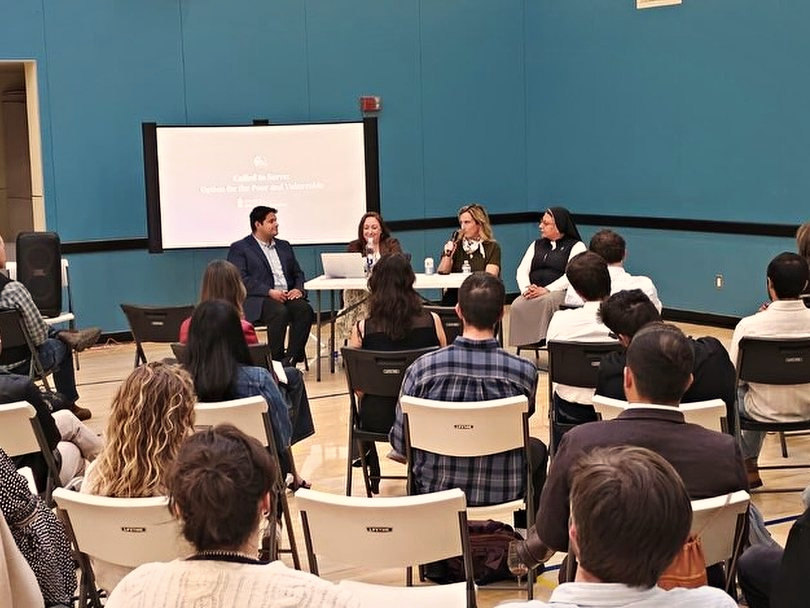
Business casual. No application — only a registration
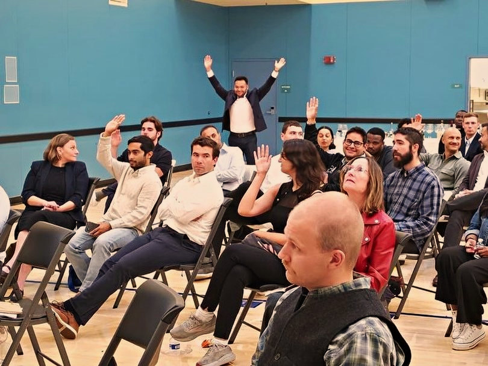
A room that has sold out every time
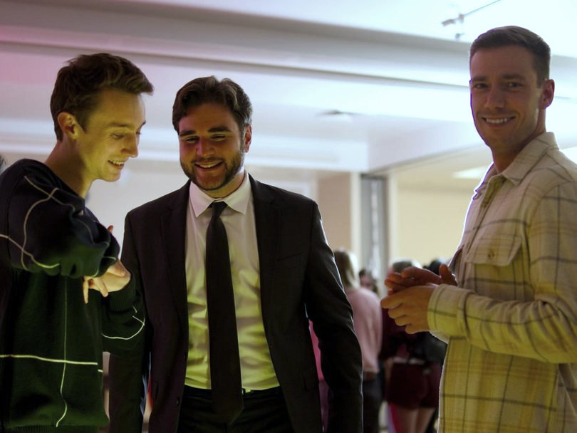
Seventeen speakers and panelists so far
A keynote on one theme of Catholic Social Teaching
A panel of people who actually do the work
A reception at 6:30, and another one after
Free, for ages 21 to 40
A direct ministry action every month
Formed with the Archdiocese of San Francisco
Business casual. No application — only a registration
A room that has sold out every time
Seventeen speakers and panelists so far
Seventeen speakers and panelists so far
A room that has sold out every time
Business casual. No application — only a registration
Formed with the Archdiocese of San Francisco
A direct ministry action every month
Free, for ages 21 to 40
A reception at 6:30, and another one after
A panel of people who actually do the work
A keynote on one theme of Catholic Social Teaching
Seventeen speakers and panelists so far
A room that has sold out every time
Business casual. No application — only a registration
Formed with the Archdiocese of San Francisco
A direct ministry action every month
Free, for ages 21 to 40
A reception at 6:30, and another one after
A panel of people who actually do the work
A keynote on one theme of Catholic Social Teaching